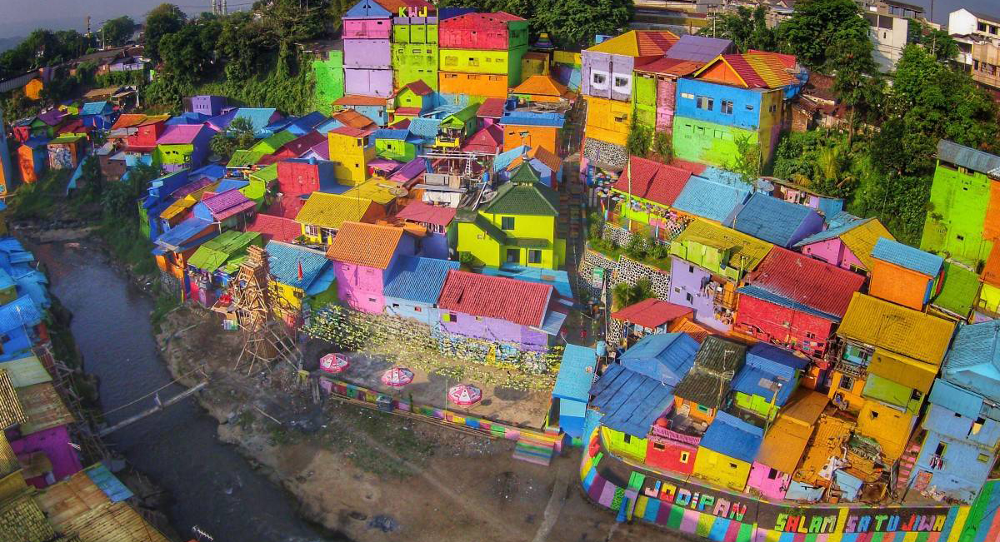
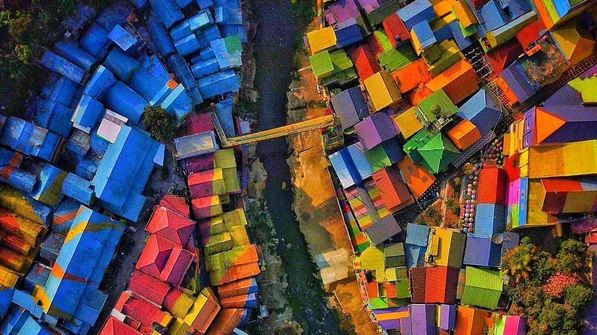

Jodipan Tourism Village
Tourist Place in Malang City
Jodipan Tourism Village is the first tourist village in Malang City in the form of a row of residents' houses on the banks of the Brantas River that features walls with various attractive colors and not monotonous. This village is located in Jodipan on the banks of the Brantas River. This Jodipan Tourism Village is usually called the Colorful Village. Kampung Warna Warni is located in two areas, namely Jodipan Village and Tridi Village. Between the two of them are connected by the glass bridge "Ngalam" Indonesia (Ngalam is pronounced Malang). This mini bridge with a glass floor was inaugurated by the Mayor of Malang, Moch. Anton, 9 October 2017.

